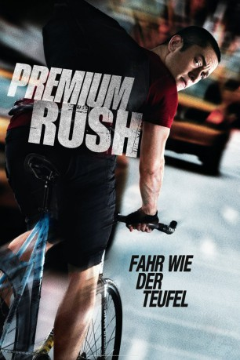

#562 Premium Rush
 gesehen am 10.03.2015
gesehen am 10.03.2015
 
 IMDB-Wertung: 6.5 / 10
IMDB-Wertung: 6.5 / 10  Metascore: 66
Metascore: 66 
Der New Yorker Fahrradkurier Wilee ist adrenalinsüchtig. Er liebt den harten Job als Kurier unter permanentem Zeitdruck. Eines Tages erhält er einen Umschlag der Columbia Universität, mit dem Auftrag, diesen innerhalb von 90 Minuten von Manhattan nach Chinatown zu bringen. Er nimmt den Auftrag an, obwohl die Zeit bereits sehr knapp bemessen ist. Doch sein Vorhaben wird durch einen mysteriösen Polizisten gefährdet. Dieser hat es auf den Inhalt des Umschlags abgesehen und jagt den Kurier quer durch die Stadt. Dann muss Wilee auch noch feststellen, dass nicht nur die Polizei Interesse an dem Umschlag hat, sondern auch noch ortsansässige Gangster. Also entscheidet er sich den Umschlag zu öffnen und verstößt damit gegen eine der Grundregeln als Kurier und Bote.
Jahr: 2012
Dauer: 91 Minuten
FSK: 12
Land: USA Studio: Columbia PicturesTonspuren: DTS - ,
Untertitel: Deutsch, Englisch,
Auflösung: 720p (1280x536) Größe: 3993 MB
Genre: Action, Krimi, Thriller
Regisseur: David Koepp
Drehbuch: David Koepp, John Kamps
Soundtrack: David Sardy
Darsteller:
 Joseph Gordon-Levitt als Wilee
Joseph Gordon-Levitt als Wilee Dania Ramirez als Vanessa
Dania Ramirez als Vanessa- Kym Perfetto als Polo
 Anthony Chisholm als Tito
Anthony Chisholm als Tito- Ashley Austin Morris als Receptionist
- Wolé Parks als Manny
 Aasif Mandvi als Raj
Aasif Mandvi als Raj Lauren Ashley Carter als Phoebe
Lauren Ashley Carter als Phoebe- Charles Borland als Campus Guard
 Michael Shannon als Bobby Monday
Michael Shannon als Bobby Monday- Aaron Tveit als Kyle
 Jamie Chung als Nima
Jamie Chung als Nima- Christopher Place als Bike Cop
- Amy Hohn als Upper West Side Lady
- Douglas C. Williams als Desk Officer
 Sebastian La Cause als Detective
Sebastian La Cause als Detective Nick Damici als Detective
Nick Damici als Detective- Brian Koppelman als Loan Shark
- Hoon Lee als Floor Manager
- Jimmy P. Wong als Enormous Asian Man
- Jade Wu als Bingo Caller
 Lyman Chen als 2nd Floor Manager
Lyman Chen als 2nd Floor Manager- Tony Cheng als Basement Pai Gow Player
- Darlene Violette als Debra
- Jason Iannacone als 21st Precinct Cop
- Ted Sod als Worker
- Alexis Krauss als Sleigh Bells
- Carsey Walker Jr. als Dread
 Matthew Rauch als Paramedic
Matthew Rauch als Paramedic Michael-Leon Wooley als NYPD Tow Truck Driver
Michael-Leon Wooley als NYPD Tow Truck Driver- Victor Chan als Squad Cop
 Jerry Walsh als Uniform Cop - Impound Lot #2
Jerry Walsh als Uniform Cop - Impound Lot #2- Mario D'Leon als Moosey
 Wai Ching Ho als Sister Chen
Wai Ching Ho als Sister Chen Marc Bicking als Professor , uncredited
Marc Bicking als Professor , uncredited Jennifer Butler als Pedestrian / Jeep Driver , uncredited
Jennifer Butler als Pedestrian / Jeep Driver , uncredited- Scott Chan als Casino Dealer #2 , uncredited
 Peter Conboy als New York City Police Officer , uncredited
Peter Conboy als New York City Police Officer , uncredited- Shirley Dluginski als Extra , uncredited
 Rosemary Howard als Flower Shop Owner , uncredited
Rosemary Howard als Flower Shop Owner , uncredited- Shing Ka als Pai Gow Gambler , uncredited
 Steven J. Klaszky als Pedestrian , uncredited
Steven J. Klaszky als Pedestrian , uncredited Jian Leonardo als New Enforcer / Principal , uncredited
Jian Leonardo als New Enforcer / Principal , uncredited Paul Jude Letersky als New York Businessman , uncredited
Paul Jude Letersky als New York Businessman , uncredited- John Mancini als Cyclist , uncredited
- Jeffrey M. Marchetti als Cab Driver , uncredited
 Danielle McKee als Pedestrian on Cell Phone 2 , uncredited
Danielle McKee als Pedestrian on Cell Phone 2 , uncredited Michael Morana als Precision Driver , uncredited
Michael Morana als Precision Driver , uncredited- Mark J. Parker als College Student , uncredited
- Jonathan Root als Younger Cop , uncredited
Datei: X:\2012(N-Z)\Premium Rush (2012, FSK12, 1280x536).mkv seit 09.03.2015
Festplatte: HD 2012(N-Z)-2013(A-H)
 Es gibt insgesamt 138 Filme in der Gruppe '2012(N-Z)'
Es gibt insgesamt 138 Filme in der Gruppe '2012(N-Z)'